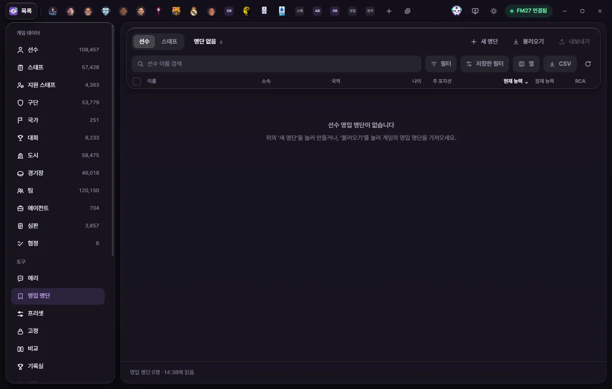

Tools
Shortlist
Collect players and staff into named shortlists. Each save keeps its own shortlists, and you can export or load FM shortlist files (.fmf).


What shortlists do
You can keep as many named shortlists inside FMAX as you like.
- Player and Staff shortlists are separate. Switch between them with Player and Staff on the left of the top bar.
- Saved separately per save. Loading a different save in FM switches to that save's shortlists. Using "Save Game As" carries your shortlists over to the new save file (What each save remembers separately).
- Shortlists live inside FMAX and don't modify game memory. To view a shortlist inside FM, export it as an .fmf file.
Screen overview
Controls in the top bar:
| Button | What it does |
|---|---|
| Player / Staff | Switches between Player shortlists and Staff shortlists |
| Shortlist selector (current name and count) | Opens the list of shortlists for the Current save, where you can switch lists, Rename, or Delete this list |
| New list | Enter a name and click Create to make an empty shortlist and open it right away |
| Load | Picks an .fmf file from FM's shortlists folder and brings it in as an FMAX shortlist |
| Export | Writes the current shortlist to FM's shortlists folder as an .fmf file |
The table below works just like the Player list—column picker, filters, sorting, search, checkboxes, select all, and the right-click menu all work the same way. Columns and filters are remembered separately from the main Player list.
If you create a shortlist with the same name as an existing one, FMAX adds a number like "(2)" at the end. Shortlist names can be up to 60 characters long.
Adding people to a shortlist
You can add people from almost anywhere, and duplicates are skipped automatically:
- From a list: Check rows in the Player or Staff list, click Add to shortlist in the bottom bar, and pick a shortlist.
- Right-click: Right-click a list row, search result, table row inside a tab, or name link and choose Add to shortlist. If multiple rows are selected, right-clicking one adds everyone selected.
- From a Club tab: Check rows in the squad or staff table to bring up the bottom bar, then click Add to shortlist.
- From Eri: Click Add n candidates to shortlist on one of Eri's candidate cards, or run a Shortlist card suggested by Eri (Eri).
At the bottom of the shortlist picker menu, click Add to new list to name a brand-new shortlist and add them straight to it. A confirmation shows how many people were added to ‘Shortlist name’.

Removing people from a shortlist
- On the Shortlist screen, check the people you want to remove.
- Click Remove from list in the bottom bar, or right-click a row and choose Remove from this list.
They're removed right away without a confirmation prompt. To put someone back, add them again using any of the methods above.
Renaming and deleting a shortlist
Click the shortlist name dropdown in the top bar to find Rename and Delete this list at the bottom of the menu.
Sharing with the game
FM stores shortlist files in the shortlists folder inside its data folder, which is usually Documents\Sports Interactive\Football Manager 27. FMAX uses the same data folder as for tactic files; the Tactics folder line in any tactic picker shows which one. If you moved FM's data folder in the game's settings or with a launch option and that line shows another folder, use Choose folder on it to pick the folder FM uses, and FMAX then uses the shortlists folder in it (Tactic files don't show up in the list). FMAX reads and writes .fmf files directly in this folder.
Exporting
- Select the shortlist you want to export and click Export.
- A notice confirms that ‘Shortlist name.fmf’ was exported with its headcount. Any characters not allowed in file names are replaced with
_. - In FM, open the Shortlist screen and click the gear icon → Load Shortlist to load the file.
If a file with the same name already exists in the folder, FMAX asks first—click Overwrite to replace it with your current shortlist.
Loading
- Click Load to see the
.fmffiles in your FM shortlists folder, along with whether each file is for Players or Staff and how many people it contains. - Pick a file to create and open a new FMAX shortlist with the same name.
You can load both shortlists saved from FM's gear menu and shortlists exported by FMAX. If the file list is empty, save your shortlist from FM's Shortlist gear menu first. Files marked "Can’t read this file" can't be selected.

If a loaded shortlist includes people who don't exist in your current save, FMAX lets you know how many out of the total were found in this game—this commonly happens with shortlists made in a different save.
Bookmark icon in other lists
In the Player and Staff lists, as well as squad and staff tables inside Club tabs, a small bookmark icon appears next to anyone on a shortlist. Hover over it to see which shortlist(s) they belong to. Inside the Shortlist screen itself, the icon is hidden since everyone listed is already on that shortlist.
When the list is empty
| Message on screen | What to do |
|---|---|
| No Player (or Staff) shortlists yet | Create one with New list or bring one in from FM with Load |
| Nobody is on ‘Shortlist name’ yet | Select people from a list and click Add to shortlist |
| No matches found | Change your search text or filters |
| Couldn’t find n people from this list in the current game | The shortlist may come from a different save |